СЕРВИС «ТРЕК»
Инструкция по использованию Telegram-бота для контроля монтажных работ
Общее описание сервиса
«Трек» — это Telegram-бот, который позволяет дистанционно контролировать ход монтажных работ на объектах: видеть процент выполнения по каждому объекту, отслеживать сроки, вовремя замечать проблемы. Сервис объединяет всех участников проекта — руководителей, монтажников и клиентов — в едином пространстве, где ежедневно фиксируется реальный прогресс работ.
Документ разделён на две части:
- Часть 1 — инструкция для руководителя (создание компании, проектов, добавление участников, контроль объектов);
- Часть 2 — инструкция для монтажника (присоединение к проекту, ежедневные отчёты).
Каждый сотрудник изучает ту часть инструкции, которая соответствует его роли.
Основные команды бота
Эти команды доступны всем пользователям бота вне зависимости от роли:
| Команда | Назначение |
|---|---|
/start | Вернуться в начало, к главному меню бота |
/project | Показать список ваших проектов (объектов) |
/company | Открыть карточку вашей компании |
/help | Показать справку по работе с ботом |
/cancel | Отменить текущее действие (например, заполнение отчёта или карточки) |
Инструкция для руководителя
Создание компании
1. Нажмите кнопку «Старт» (или команду /start).
После создания появится кнопка «Открыть компанию» — нажмите её, чтобы перейти в карточку компании.
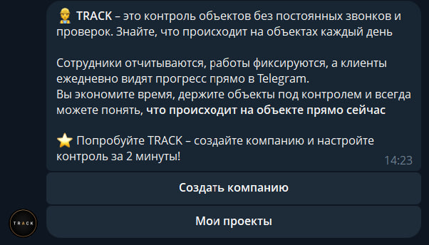
Карточка компании
В карточке компании отображаются:
- название компании;
- общее количество проектов;
- количество активных проектов;
- регламент внедрения системы в бизнес-процессы компании (если есть). Доступен только руководителям.
- инструкция по использованию сервиса (доступна и руководителям, и монтажникам).
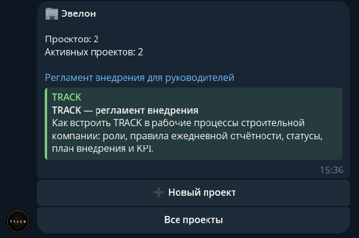
Из карточки компании руководитель видит список всех своих проектов. Если проектов ещё нет — их можно создать здесь же.
Создание нового проекта (объекта)
Чтобы создать проект, нажмите кнопку создания нового проекта и последовательно ответьте на вопросы бота:
На этом шаге можно описать план монтажных работ или отказаться. Это отдельно необходимый шаг — если план не прикреплён, бот не сможет автоматически считать процент готовности объекта.
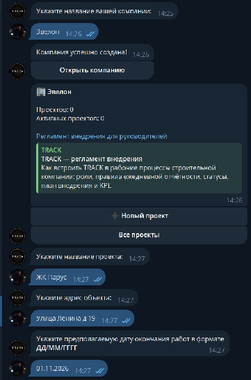
План оформляется по образцу, который присылает бот, например:
- приёмка материала;
- разметка;
- установка оборудования;
- прокладка трасс вентиляции;
- прокладка трасс увлажнения;
- сдача объекта.
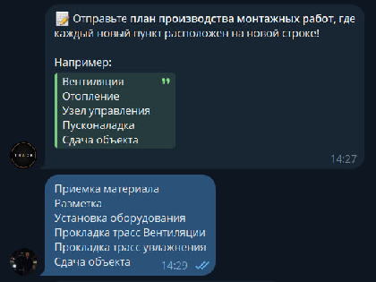
После заполнения всех пунктов бот автоматически создаёт карточку проекта со следующими данными: название, процент готовности (изначально 0%, так как отчётов ещё не было), адрес, участники, дедлайн и последние новости по объекту.
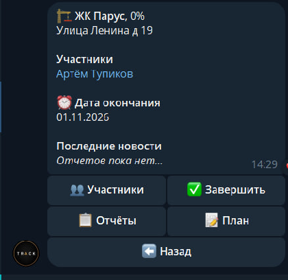
Карточка проекта — кнопки руководителя
В карточке проекта руководителю доступны 4 основные кнопки:
| Кнопка | Что делает |
|---|---|
| Участники | Добавление участников проекта: руководителей, монтажников, клиентов |
| Завершить | Завершает проект — он архивируется и уходит в историю |
| Отчёты | Все отчёты по проекту за всё время: фотографии, видео, статусы, комментарии |
| План | План монтажных работ; выполненные этапы отмечаются галочкой по мере поступления отчётов. |
Кнопка «Назад» возвращает к списку своих объектов.
Добавление участников
1. Откройте проект и нажмите кнопку «Участники».
2. Выберите, кого хотите добавить: руководителя, сотрудника (монтажника) или клиента.
3. Бот сформирует пригласительную ссылку — отправьте её человеку в Telegram.
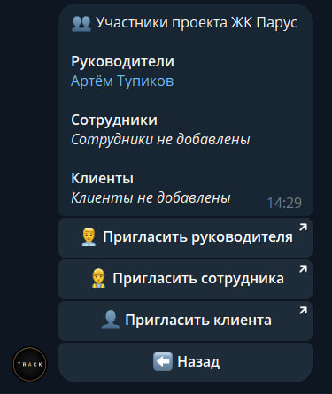
Пример сообщения, которое получит будущий монтажник:
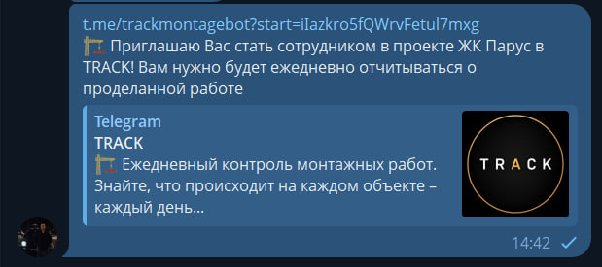
Контроль объектов
На главном экране руководитель видит все свои объекты, в которых он участвует, собранные в одном месте. По каждому объекту сразу отображается процент готовности и цветовой статус по срокам:
| Статус | Что означает |
|---|---|
| Зелёный | Всё идёт по плану, задержек нет |
| Жёлтый | Есть риск задержки — монтажник указывает причину |
| Красный | Задержка уже произошла — монтажник указывает причину |
Это позволяет руководителю мгновенно понять, на какие объекты нужно обратить внимание в первую очередь, а куда пока вникать не требуется — если по объекту всё «зелёное», необходимости погружаться в детали нет.
Если объект отмечен жёлтым или красным статусом, руководитель может открыть его и увидеть причину задержки или риска — она указывается монтажником при заполнении отчёта.
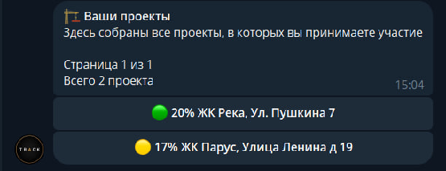
Инструкция для монтажника
Присоединение к проекту
1. Получите от руководителя пригласительную ссылку в Telegram.
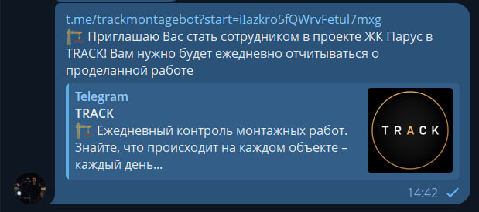
2. Перейдите по ссылке — придёт сообщение о присоединении к проекту.
3. Нажмите кнопку «Старт» в боте.
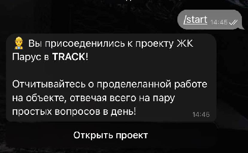
Далее нажмите кнопку «Открыть проект» — откроется карточка проекта: название, процент реализации, адрес, список сотрудников, дата окончания (дедлайн) и последние новости.
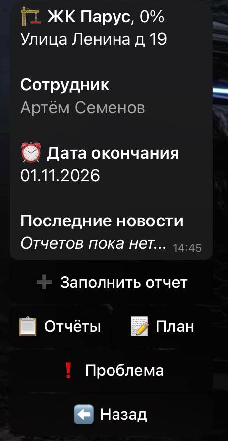
Кнопки монтажника
| Кнопка | Что делает |
|---|---|
| Заполнить отчёт | Ежедневный отчёт о проделанной работе; |
| Отчёты | Просмотр своих ранее отправленных отчётов; |
| План | План монтажных работ по объекту |
| Проблема | Экстренное сообщение о проблеме на объекте |
Кнопка «Назад» возвращает к списку своих объектов.
Заполнение ежедневного отчёта
В конце рабочей смены нажмите кнопку «Заполнить отчёт» и последовательно ответьте на вопросы бота.
Нужно выбрать один из трёх вариантов кнопками:
| Статус | Что означает |
|---|---|
| Зелёный | Всё идёт по плану, задержек нет |
| Жёлтый | Есть риск задержки — монтажник указывает причину |
| Красный | Задержка уже произошла — монтажник указывает причину |
Если выбран жёлтый или красный статус, бот попросит кратко описать причину:
Указывайте только реальные причины, которые действительно влияют на сроки сдачи объекта
Отметка этапа плана
Бот автоматически подгружает пункт плана монтажных работ, на котором сейчас находится объект, и спрашивает:
Ответьте одним из вариантов:
- Готово — этап полностью завершён;
- В процессе — этап ещё не завершён.
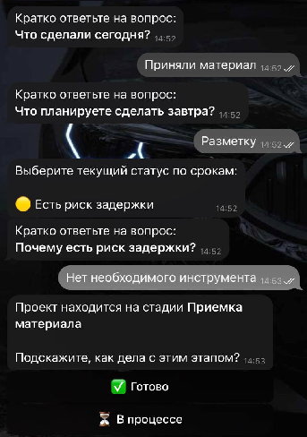
Прикрепление фото и видео
Если этап отмечен как «Готово», необходимо прикрепить от 3 до 10 фотографий или видео с объекта, подтверждающих выполнение этапа — без этого отчёт не будет засчитан.
После загрузки материалов обязательно нажмите кнопку «Готово», чтобы подтвердить, что все материалы прикреплены и отчёт полностью сформирован.
Если кнопка «Готово» пропала из вида, нажмите на значок из четырёх квадратиков рядом с полем ввода сообщения — кнопка появится снова\!
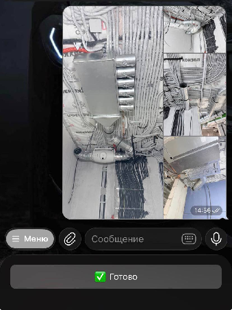
После отправки отчёта
Сформированный отчёт сразу становится виден:
- самому монтажнику — как подтверждение, что отчёт зафиксирован;
- руководителю — отчёт поступает автоматически;
- клиенту — если руководитель подключил клиента к проекту, он тоже видит ежедневный прогресс по своему объекту.
Процент готовности объекта и статус этапа плана обновляются автоматически по итогам отчёта.
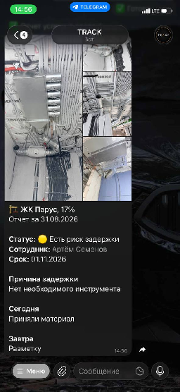
Кнопка «Проблема»
Используется, если на объекте возникла непредвиденная ситуация, которую нужно решить срочно — вне рамок обычного ежедневного отчёта. Сообщение о проблеме сразу попадает в отчёт и позволяет руководителю и другим сотрудникам быстро подключиться к решению вопроса.
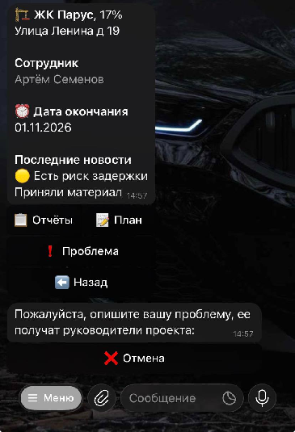
Просмотр своих отчётов
Кнопка «Отчёты» показывает все ранее отправленные отчёты по проекту: даты, статусы, комментарии и загруженные фотографии/видео. Отчёты за разные даты и этапы можно листать.
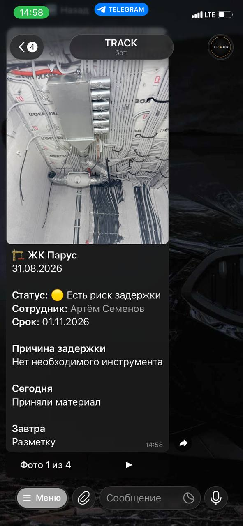